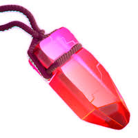

RAGE GEM

"Nearby friendly units do extra damage"
SUMMARY
- The Rage Gem is a piece of Common Hero Equipment for the Grand Warden. It is unlocked when the Blacksmith is upgraded to level 4, which requires Town Hall level 11.
- The Rage Gem appears to be a purple gemstone shaped like a vial which as a reddish-purple cover and is held by a reddish-purple rope. When equipped, it casts a purple magical aura around the Grand Warden that grants additional damage to units while they stay within the aura's radius. The area of effect is denoted by a circular ring centered around the Warden. However, the aura disappears when he is defeated in battle.
- The Rage Gem's effects has no effect on the Grand Warden himself, however he does gain increased damage per second and attack speed by having it equipped.
STRATEGIES
- The Rage Gem is excellent for Warden Walks. Not only does its passive boosts increase the damage output of the Grand Warden, the resulting aura will enrage the Healers, allowing them to heal damage more quickly. This allows the Warden Walk to be both faster and safer, but also potentially less resource-intensive, since less Spells and Healers will be needed for a successful walk.
- One thing this could be paired up with the Rage Gem is the Eternal Tome, as the Rage Gem will increase the damage, while as the troops is invulnerable when they tackle the core of the base and the Town Hall. Be aware that defensive spells from the Giga Inferno and Poison Spell Tower can still slow the attack down.
- Because it is passive, you can use it all around to boost your damage dealers to destroy defenses faster and for a more successful attack.
home page